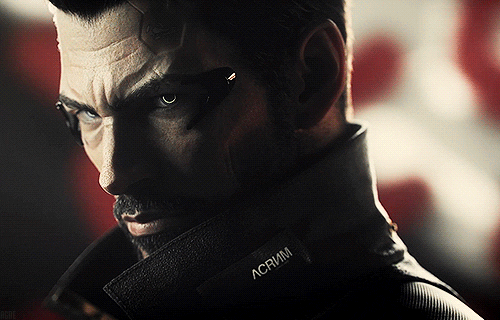
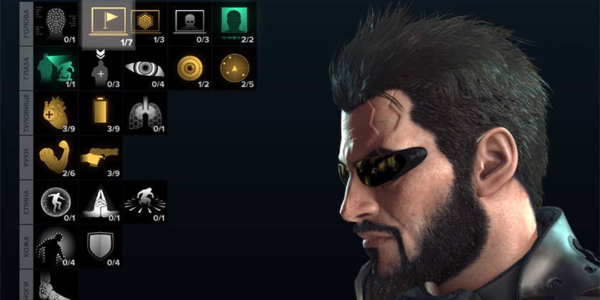

Хэнша
ХэншаДетройт
Шариф Индастриз
Шариф
Притчард
Адам Дженсен
Малик
Хэнша
Детройт
Шариф Индастриз
Шариф
Притчард
Адам Дженсен
Малик
Шариф Индастриз - организация средних размеров, но с продвинутой научной базой, занимающаяся исследованиями в области биотехнологий и разрабатывающая механические модификации. Компания базируется в Северной Америке, их штаб-квартира расположена в Детройте.
Ключевые персонажи

|
Взлом: Захват Захват камер Управление роботами Взлом: укрепление Взлом: скрытность Инфолинк Микроассемблер Импланты Глаз Импланты тела Имплант замкнутого дыхания Импланты рук |   |
Пакет Праксис (англ. Praxis Kit) — предмет-программа, необходимая для улучшения аугментаций и по своей сути являющейся аналогом ресурса, требуемого для развития персонажа. Два пакета Праксис требуется для открытия нового имплантата и одно — для остальных умений открытой ветки. Помимо бонуса за опыт, Праксис покупается или находится. Является ценнейшим и очень редким ресурсом игры. |